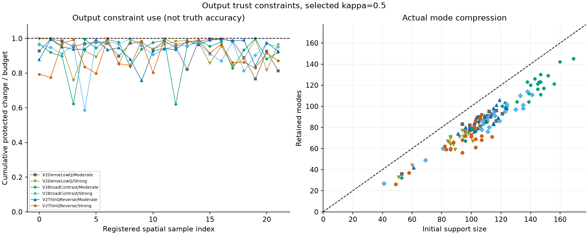
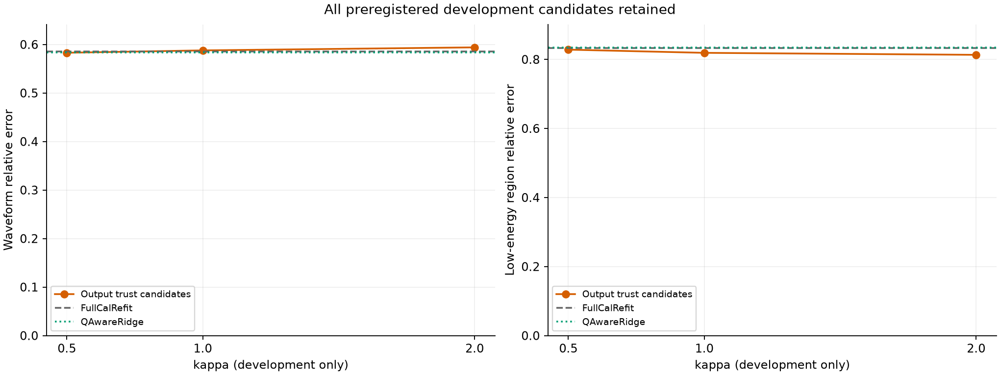
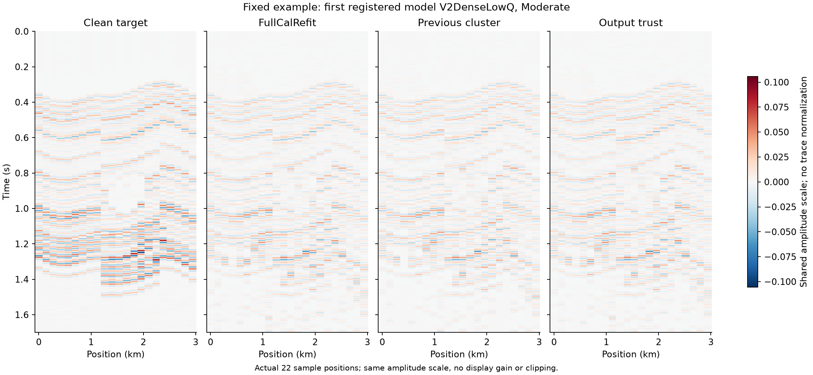
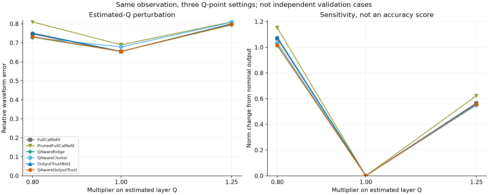
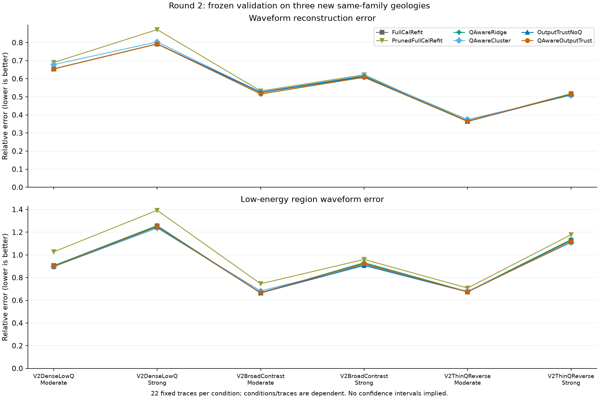

第二轮：输出保幅信赖域
验收：未通过；波形误差改善 +0.18%，低能量区 +0.32%。
完整报告 · 全部指标
figures/constraint_and_rank.png

figures/development_selection.png

figures/fixed_gathers.png

figures/Q_sensitivity.png

figures/validation_errors.png
